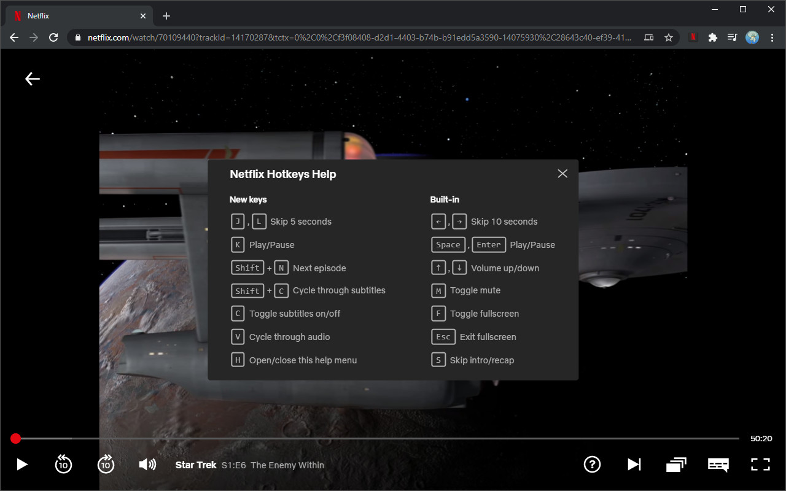

Add Hotkeys to Netflix
Netflix Hotkeys adds various keyboard shortcuts to the Netflix video player to use its functions faster and more easily. The extension also adds some additional features like a volume display, changing video playback speed and quick toggling subtitles on and off.